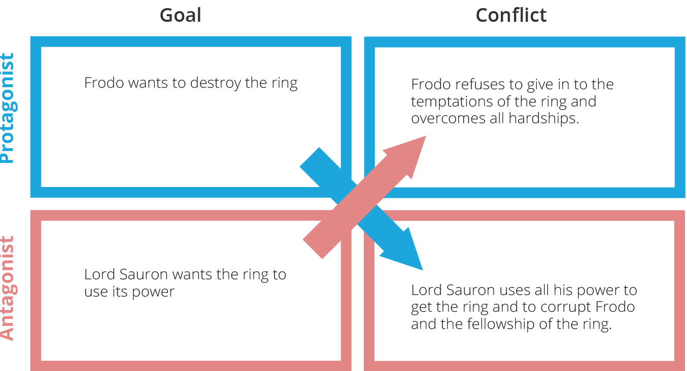

The conflict box
X The protagonist is the main character and the “hero” of the story.
The antagonist is the opposing character, the ”bad guy”.
Remember that the protagonist can be the antagonist at the same time.
The protagonist wants to achieve something and the antagonist wants to prevent the protagonist from achieving his or her goal. This is a conflict. When it is impossible for the protagonist and antagonist to succeed at the same time the conflict is locked.
A story is often a description of a conflict between two forces. The story begins when a protagonist tries to reach his or her goal and takes form as the antagonist fights the protagonist in achieving his or her goal. If you want to understand and analyse a film is important to find out what the central conflict is about and if the conflict is locked.
To figure out the central conflict of the film you can try to fill in the conflict box.
An example - Lord of The Rings
Based on The Lord of the Rings, here is an example of how you can use the conflict box.
The Lord of the Ring is a fantasy film based on a world called Middle Earth.
The Evil Sauron wants to take over control of the entire world. An alliance forms to fight Sauron.
The story begins when Frodo leaves the Shire to keep the ring safe from Sauron.
The story takes form when Sauron does all he can to get the ring back.
The conflict in the film is, for instance, seen when Sauron sends the ring wraiths to kill the hobbits at the Prancing Pony. When Sauron’s evil almost succeeds in corrupting Boromir, one of Frodo’s helpers, and when the characters Pippin and Merry defeat one of Sauron’s evil allies with the help of the Ents.

Try it out
Choose a film and analyse it using the conflict box model. Use this PDF to help you.
 Using The Conflict Box
Using The Conflict Box